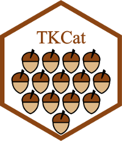
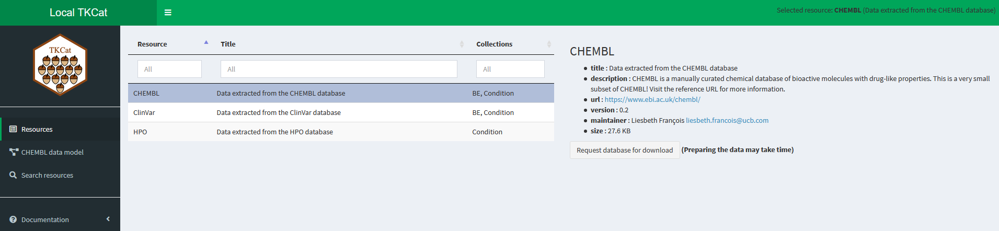

Introduction
Research organizations generate, manage, and use more and more knowledge resources which can be highly heterogenous in their origin, their scope, and their structure. Making this knowledge compliant to F.A.I.R. (Findable, Accessible, Interoperable, Reusable) principles is critical for facilitating the generation of new insights leveraging it. The aim of the TKCat (Tailored Knowledge Catalog) R package is to facilitate the management of such resources that are frequently used alone or in combination in research environments.
In TKCat, knowledge resources are manipulated as modeled database (MDB) objects. These objects provide access to the data tables along with a general description of the resource and a detail data model generated with ReDaMoR documenting the tables, their fields and their relationships. These MDB are then gathered in catalogs that can be easily explored an shared. TKCat provides tools to easily subset, filter and combine MDBs and create new catalogs suited for specific needs.
Currently, there are 3 different implementations of MDBs which are supported by TKCat: in R memory (memoMDB), in files (fileMDB) and in ClickHouse (chMDB).
This is document is divided in four main sections:
The first one describes how to build an MDB object, starting with a minimal example
The second section shows how to interact with MDB objects to extract and combine information of interest
The third section focuses on the use of the ClickHouse implementation of MDB (chMDB)
The fourth section corresponds to appendices providing technical information regarding ClickHouse related admin tasks and the implementation of collections which are used to identify and leverage potential relationships between different MDBs.
Create an MDB: a minimal example
This section shows how to create an MDB object starting from a set of tables in three steps:
- Create a data model
- Create and validate a modeled database (MDB) by binding the data model to the dataset
- Document concept collections that can be used to make bridges across different MDBs
This example focuses on the Human Phenotype Ontology (HPO). The HPO aims to provide a standardized vocabulary of phenotypic abnormalities encountered in human diseases (Köhler et al. 2019).
Loading example data
A subset of the HPO is provided within the ReDaMoR package. We can read some of the tables as follow:
library(readr)
hpo_data_dir <- system.file("examples/HPO-subset", package="ReDaMoR")The HPO_hp table gathers human phenotype identifiers,
names and descriptions:
## # A tibble: 500 × 4
## id name description level
## <chr> <chr> <chr> <dbl>
## 1 0000002 Abnormality of body height Deviation fr… 3
## 2 0000009 Functional abnormality of the bladder Dysfunction … 6
## 3 0000014 Abnormality of the bladder An abnormali… 5
## 4 0000017 Nocturia Abnormally i… 7
## 5 0000019 Urinary hesitancy Difficulty i… 7
## 6 0000021 Megacystis Dilatation o… 8
## 7 0000022 Abnormality of male internal genitalia An abnormali… 6
## 8 0000024 Prostatitis The presence… 8
## 9 0000025 Functional abnormality of male internal genitalia NA 6
## 10 0000030 Testicular gonadoblastoma The presence… 9
## # ℹ 490 more rowsThe HPO_diseases table gathers disease identifiers and
labels from different disease database.
## # A tibble: 1,903 × 3
## db id label
## <chr> <dbl> <chr>
## 1 DECIPHER 15 NF1-microdeletion syndrome
## 2 DECIPHER 45 Xq28 (MECP2) duplication
## 3 DECIPHER 65 ATR-16 syndrome
## 4 OMIM 100050 AARSKOG SYNDROME, AUTOSOMAL DOMINANT
## 5 OMIM 100650 ALDEHYDE DEHYDROGENASE 2 FAMILY
## 6 OMIM 101800 ACRODYSOSTOSIS 1, WITH OR WITHOUT HORMONE RESISTANCE; ACRDYS1
## 7 OMIM 102500 HAJDU-CHENEY SYNDROME; HJCYS
## 8 OMIM 102510 ACROPECTOROVERTEBRAL DYSPLASIA, F-FORM OF
## 9 OMIM 102700 SEVERE COMBINED IMMUNODEFICIENCY, AUTOSOMAL RECESSIVE, T CEL…
## 10 OMIM 102800 ADENOSINE TRIPHOSPHATASE DEFICIENCY, ANEMIA DUE TO
## # ℹ 1,893 more rowsThe HPO_diseaseHP table indicates which phenotype is
triggered by each disease.
## # A tibble: 2,594 × 3
## db id hp
## <chr> <dbl> <chr>
## 1 ORPHA 140976 0000002
## 2 ORPHA 432 0000002
## 3 DECIPHER 45 0000009
## 4 OMIM 300076 0000009
## 5 ORPHA 100996 0000009
## 6 ORPHA 100997 0000009
## 7 ORPHA 2571 0000009
## 8 ORPHA 391487 0000009
## 9 ORPHA 488594 0000009
## 10 ORPHA 71211 0000009
## # ℹ 2,584 more rowsCreating a data model with ReDaMoR
The ReDaMoR package can be used for drafting a data model from a set of table:
mhpo_dm <- ReDaMoR::df_to_model(HPO_hp, HPO_diseases, HPO_diseaseHP)
if(igraph_available){
mhpo_dm %>%
ReDaMoR::auto_layout(lengthMultiplier=80) %>%
plot()
}else{
mhpo_dm %>%
plot()
}This data model is minimal: only the name of the tables, their fields
and their types are documented. There is no additional constrain
regarding the uniqueness or the completeness of the fields. Also there
is no information regarding the relationships between the different
tables. The model_relational_data() can be used to improve
the documentation of the dataset according to what we know about it.
This function raises a graphical interface for manipulating and
modifying the data model (see ReDaMoR
documentation).
mhpo_dm <- ReDaMoR::model_relational_data(mhpo_dm)Below is the model we get after completing it using the function above.
plot(mhpo_dm)In this model, we can see that:
- id is the primary key of the HPO_hp table, and therefore this field must be unique;
- db/id form the primary key of the HPO_diseases table and must also be unique when taken together;
- all the fields excepted description (in the HPO_hp table) are complete (they cannot be NA);
- the HPO_diseaseHP table refers to the HPO_hp table using its HPO_hp fields and to the HPO_diseases table using its db and id fields (such details are shown when putting cursor over the edges).
Moreover, some comments are added at the table and at the field level to give a better understanding of the data (shown when putting the cursor over the tables).
Binding the model to the data in an MDB object
The data model can be explicitly bound to the data in an MDB (Modeled DataBase) object as shown below. However, when trying to build the object with the tables we’ve read and the data model we have edited, we get the following error message.
mhpo_db <- memoMDB(
dataTables=list(
HPO_hp=HPO_hp, HPO_diseases=HPO_diseases, HPO_diseaseHP=HPO_diseaseHP
),
dataModel=mhpo_dm,
dbInfo=list(name="miniHPO")
)miniHPO
FAILURE
Check configuration
- Optional checks: unique, not nullable, foreign keys
- Maximum number of records: Inf
Indeed, according to the edited model (not the very first one
automatically created by ReDaMoR), the HPO_hp$level field
should contain integer values and the
HPO_diseases$id and HPO_diseaseHP$id fields
should contain character values. The type of the data is among
the data model features that are automatically checked when building an
MDB object (along with uniqueness or NA values for example).
To avoid this error, we can either change the type of the columns of the data tables:
HPO_hp <- mutate(HPO_hp, level=as.integer(level))
HPO_diseases <- mutate(HPO_diseases, id=as.character(id))
HPO_diseaseHP <- mutate(HPO_diseaseHP, id=as.character(id))
mhpo_db <- memoMDB(
dataTables=list(
HPO_hp=HPO_hp, HPO_diseases=HPO_diseases, HPO_diseaseHP=HPO_diseaseHP
),
dataModel=mhpo_dm,
dbInfo=list(name="miniHPO")
)Or we can use the data model to read the data in a fileMDB object:
f_mhpo_db <- read_fileMDB(
path=hpo_data_dir,
dbInfo=list(name="miniHPO"),
dataModel=mhpo_dm
)## miniHPO
## SUCCESS
##
## Check configuration
## - Optional checks:
## - Maximum number of records: 10The read_fileMDB() function identifies the text files to
read in path according to the dataModel. It
uses the types documented in the data model to read the files. By
default, the field delimiter is \t, but another can be
defined by writing a delim slot in the dbInfo
parameter
(e.g. dbInfo=list(name="miniHPO", delim="\t")).
As shown in the message above, by default,
read_fileMDB() does not perform optional checks
(unique fields, not nullable fields, foreign
keys) and it only checks data on the 10 first records. Also, the
fileMDB data are not loaded in memory until requested by the user. The
object is then smaller than the memoMDB object even if they gather the
same information.
print(object.size(mhpo_db), units="Kb")## 691.9 Kb
print(object.size(f_mhpo_db), units="Kb")## 23.5 Kb
compare_MDB(former=mhpo_db, new=f_mhpo_db) %>%
DT::datatable(
rownames=FALSE,
width="75%",
options=list(dom="t", pageLength=nrow(.))
)Adding information about an MDB
In the table above we can see that several pieces of information are
expected in an MDB object even if not mandatory (title,
description, url, version,
maintainer, timestamp). They can be provided in the
dbInfo parameter of the MDB creator function
(e.g. memoMDB()) or added afterward:
- title, description and url are used to give more details about the scope of the data and their origin.
db_info(mhpo_db)$title <- "Very small extract of the human phenotype ontology"
db_info(mhpo_db)$description <- "For demonstrating ReDaMoR and TKCat capabilities, a very few information from the HPO (human phenotype ontology) has been extracted"
db_info(mhpo_db)$url <- "https://hpo.jax.org/app/"- version and maintainer are related to db information and the data model whereas timestamp should be used to document the data themselves.
db_info(mhpo_db)$version <- "0.1"
db_info(mhpo_db)$maintainer <- "Patrice Godard"
db_info(mhpo_db)$timestamp <- Sys.time()All this information is displayed when printing the object:
mhpo_db## memoMDB miniHPO (version 0.1, Patrice Godard): Very small extract of the human phenotype ontology
## - 3 tables with 10 fields
##
## No collection member
##
## For demonstrating ReDaMoR and TKCat capabilities, a very few information from the HPO (human phenotype ontology) has been extracted
## (https://hpo.jax.org/app/)
##
## Timestamp: 2024-05-22 15:42:44.394634
## Documenting collection members
In the HPO example, one table regards human phenotypes (HPO_hp) and another human diseases (HPO_diseases). These concepts are general and referenced in many other knowledge or data resources (e.g. database providing information about disease genetics). Therefore, documenting formally such concepts will help to identify how to connect the HPO example to other resources referencing the same or related concepts.
In TKCat, these central concepts are referred as members of collections. Collections are pre-defined and members must be documented according to this definition. There are currently two collections provided within the TKCat package:
## # A tibble: 2 × 2
## title description
## <chr> <chr>
## 1 BE Collection of biological entity (BE) concepts
## 2 Condition Collection of condition conceptsAdditional collections can be defined by users according to their needs. Further information about collections implementation is provided in the appendix.
So far, there is no collection member documented in the HPO example described above, as indicated by the “No collection member” statement displayed when printing the object:
mhpo_db## memoMDB miniHPO (version 0.1, Patrice Godard): Very small extract of the human phenotype ontology
## - 3 tables with 10 fields
##
## No collection member
##
## For demonstrating ReDaMoR and TKCat capabilities, a very few information from the HPO (human phenotype ontology) has been extracted
## (https://hpo.jax.org/app/)
##
## Timestamp: 2024-05-22 15:42:44.394634
## However, as just discussed, the HPO_hp table refers to human phenotypes and the HPO_diseases table to human diseases. These concept corresponds to conditions and those tables can be documented as member of the Condition collection.
Condition members are documented calling the
add_collection_member() function on the MDB object. The two
other main arguments are the name of the collection and the
name of the table in the MDB object. The other arguments to
be provided depend on the collection. For Condition members,
three additional arguments must be provided:
-
conditionindicate the type of the condition (“Phenotype” or “Disease”) -
sourcea reference source of the condition identifier -
identifiera condition identifier
The functions get_local_collection() and
show_collection_def() can be used together to identify
valid arguments:
get_local_collection("Condition") %>%
show_collection_def()## Condition collection: Collection of condition concepts
## Arguments (non-mandatory arguments are between parentheses):
## - condition:
## + static: logical
## + value: character
## - source:
## + static: logical
## + value: character
## - identifier:
## + static: logical
## + value: characterWhen calling add_collection_member(), these arguments
must be provided as a list with 2 elements named “value” (a character)
and “static” (a logical). If “static” is TRUE, “value” corresponds to
the information shared by all the rows of the table. If “static” is
FALSE, “value” indicates the name of the column which provides this
information for each row.
The example below shows how the HPO_hp table is documented as a member of the Condition collection.
mhpo_db$HPO_hp## # A tibble: 500 × 4
## id name description level
## <chr> <chr> <chr> <int>
## 1 0000002 Abnormality of body height Deviation fr… 3
## 2 0000009 Functional abnormality of the bladder Dysfunction … 6
## 3 0000014 Abnormality of the bladder An abnormali… 5
## 4 0000017 Nocturia Abnormally i… 7
## 5 0000019 Urinary hesitancy Difficulty i… 7
## 6 0000021 Megacystis Dilatation o… 8
## 7 0000022 Abnormality of male internal genitalia An abnormali… 6
## 8 0000024 Prostatitis The presence… 8
## 9 0000025 Functional abnormality of male internal genitalia NA 6
## 10 0000030 Testicular gonadoblastoma The presence… 9
## # ℹ 490 more rows
mhpo_db <- add_collection_member(
mhpo_db, collection="Condition", table="HPO_hp",
condition=list(value="Phenotype", static=TRUE),
source=list(value="HP", static=TRUE),
identifier=list(value="id", static=FALSE)
)All rows in this table correspond to a condition of type “Phenotype”
(condition=list(value="Phenotype", static=TRUE)). The
phenotype identifiers are all taken from the same source, “HP”
(source=list(value="HP", static=TRUE)). The phenotype
identifiers are provided in the “id” column of the table
(identifier=list(value="id", static=FALSE)).
The example below shows how the HPO_disease table is
documented also as a member of the Condition collection. In
this case, the source of disease identifier can be different from one
row to the other and is provided in the “db” column
(source=list(value="db", static=FALSE)).
mhpo_db <- add_collection_member(
mhpo_db, collection="Condition", table="HPO_diseases",
condition=list(value="Disease", static=TRUE),
source=list(value="db", static=FALSE),
identifier=list(value="id", static=FALSE)
)Now, the existence of collection members is shown when printing the MDB object:
mhpo_db## memoMDB miniHPO (version 0.1, Patrice Godard): Very small extract of the human phenotype ontology
## - 3 tables with 10 fields
##
## Collection members:
## - 2 Condition members
##
## For demonstrating ReDaMoR and TKCat capabilities, a very few information from the HPO (human phenotype ontology) has been extracted
## (https://hpo.jax.org/app/)
##
## Timestamp: 2024-05-22 15:42:44.394634
## And the documented collection members of an MDB can be displayed as following:
collection_members(mhpo_db)## # A tibble: 6 × 9
## collection cid resource mid table field static value type
## <chr> <chr> <chr> <int> <chr> <chr> <lgl> <chr> <chr>
## 1 Condition miniHPO_Condition_1.0 miniHPO 1 HPO_… cond… TRUE Phen… NA
## 2 Condition miniHPO_Condition_1.0 miniHPO 1 HPO_… sour… TRUE HP NA
## 3 Condition miniHPO_Condition_1.0 miniHPO 1 HPO_… iden… FALSE id NA
## 4 Condition miniHPO_Condition_1.0 miniHPO 2 HPO_… cond… TRUE Dise… NA
## 5 Condition miniHPO_Condition_1.0 miniHPO 2 HPO_… sour… FALSE db NA
## 6 Condition miniHPO_Condition_1.0 miniHPO 2 HPO_… iden… FALSE id NAThe use of collection members to link or integrate different MDBs will be described later in this document
Writing an MDB in files
Once an MDB has been created and documented in can be written in a directory:
tmpDir <- tempdir()
as_fileMDB(mhpo_db, path=tmpDir, htmlModel=FALSE)The structure of the created directory is the following:
## miniHPO
## ¦--data
## ¦ ¦--HPO_diseaseHP.txt.gz
## ¦ ¦--HPO_diseases.txt.gz
## ¦ °--HPO_hp.txt.gz
## ¦--DESCRIPTION.json
## °--model
## ¦--Collections
## ¦ °--Condition-miniHPO_Condition_1.0.json
## °--miniHPO.jsonAll the data are in the data folder whereas the data model
and collection members are written in json files in the model
folder. The DESCRIPTION.json file gather db information and
information about how to read the data files (i.e. delim,
na).
This folder can be shared and it’s then easy to get all the data and the corresponding documentation from it back in R:
read_fileMDB(file.path(tmpDir, "miniHPO"))## miniHPO
## SUCCESS
##
## Check configuration
## - Optional checks:
## - Maximum number of records: 10## fileMDB miniHPO (version 0.1, Patrice Godard): Very small extract of the human phenotype ontology
## - 3 tables with 10 fields
##
## Collection members:
## - 2 Condition members
##
## For demonstrating ReDaMoR and TKCat capabilities, a very few information from the HPO (human phenotype ontology) has been extracted
## (https://hpo.jax.org/app/)
##
## Timestamp: 2024-05-22 15:42:44
## Also writing these data and related information in text files make them convenient to share with people using them in other analytical environments than R.
Leveraging MDB
The former section showed how to create and save an MDB object. This section describes how MDBs can be used, filtered and combined to efficiently leverage their content.
As a reminder, a modeled database (MDB) in TKCat gathers the following information:
- General database information including a mandatory name and optionally the following fields: title, description, url, version and maintainer.
- A ReDaMoR data model.
- A list of tables corresponding to reference concepts shared by different MDBs. The way these concepts are identified is defined in specific documents called collections.
- The data themselves organized according to the data model.
Loading example data
To illustrate how MDBs can be used, some example data are provided within the ReDaMoR and the TKCat package. The following paragraphs show how to load them in the R session.
HPO
A subset of the Human Phenotype
Ontology (HPO) is provided within the ReDaMoR package. The HPO
aims to provide a standardized vocabulary of phenotypic abnormalities
encountered in human diseases (Köhler et al. 2019). An MDB
object based on files (see MDB
implementations) can be read as shown below. As explained above, the
data provided by the path parameter are documented with a
model (dataModel parameter) and general information
(dbInfo parameter).
file_hpo <- read_fileMDB(
path=system.file("examples/HPO-subset", package="ReDaMoR"),
dataModel=system.file("examples/HPO-model.json", package="ReDaMoR"),
dbInfo=list(
"name"="HPO",
"title"="Data extracted from the HPO database",
"description"=paste(
"This is a very small subset of the HPO!",
"Visit the reference URL for more information."
),
"url"="http://human-phenotype-ontology.github.io/"
)
)## HPO
## SUCCESS
##
## Check configuration
## - Optional checks:
## - Maximum number of records: 10The message displayed in the console indicates if the data fit the
data model. It relies on the ReDaMoR::confront_data()
functions and check by default the first 10 rows of each file.
The data model can then be drawn.
plot(data_model(file_hpo))The data model shows that this MDB contains the 3 tables taken into account in the minimal example. The additional tables provides mainly supplementary details regarding phenotype and diseases. Still, the HPO_hp and the HPO_disease table are members of the Condition collection and can be documented as such, as explained above.
file_hpo <- file_hpo %>%
add_collection_member(
collection="Condition", table="HPO_hp",
condition=list(value="Phenotype", static=TRUE),
source=list(value="HP", static=TRUE),
identifier=list(value="id", static=FALSE)
) %>%
add_collection_member(
collection="Condition", table="HPO_diseases",
condition=list(value="Disease", static=TRUE),
source=list(value="db", static=FALSE),
identifier=list(value="id", static=FALSE)
)ClinVar
A subset of the ClinVar database is
provided within this package. ClinVar is a freely accessible, public
archive of reports of the relationships among human variations and
phenotypes, with supporting evidence (Landrum et al. 2018). This
resource can be read as a fileMDB as shown above. However,
in this case all the documenting information is included in the resource
directory, making it easier to read as explained
above.
file_clinvar <- read_fileMDB(
path=system.file("examples/ClinVar", package="TKCat")
)## ClinVar
## SUCCESS
##
## Check configuration
## - Optional checks:
## - Maximum number of records: 10
file_clinvar## fileMDB ClinVar (version 0.9, Patrice Godard <patrice.godard@ucb.com>): Data extracted from the ClinVar database
## - 21 tables with 86 fields
##
## Collection members:
## - 1 BE member
## - 2 Condition members
##
## ClinVar is a freely accessible, public archive of reports of the relationships among human variations and phenotypes, with supporting evidence. This is a very small subset of ClinVar! Visit the reference URL for more information.
## (https://www.ncbi.nlm.nih.gov/clinvar/)
##
## CHEMBL
Similarly, a self-documented subset of the CHEMBL database is also provided in the TKCat package. It can be read the same way.
file_chembl <- read_fileMDB(
path=system.file("examples/CHEMBL", package="TKCat")
)## CHEMBL
## SUCCESS
##
## Check configuration
## - Optional checks:
## - Maximum number of records: 10CHEMBL is a manually curated chemical database of bioactive molecules with drug-like properties (Mendez et al. 2019).
file_chembl## fileMDB CHEMBL (version 0.2, Liesbeth François <liesbeth.francois@ucb.com>): Data extracted from the CHEMBL database
## - 10 tables with 61 fields
##
## Collection members:
## - 1 BE member
## - 1 Condition member
##
## CHEMBL is a manually curated chemical database of bioactive molecules with drug-like properties. This is a very small subset of CHEMBL! Visit the reference URL for more information.
## (https://www.ebi.ac.uk/chembl/)
##
## MDB implementations
There are 3 main implementations of MDBs:
fileMDB objects keep the data in files and load them only when requested by the user. These implementation is the first one which is used when reading MDB as demonstrated in the examples above.
memoMDB objects have all the data loaded in memory. These objects are very easy to use but can take time to load and can use a lot of memory.
chMDB objects get the data from a ClickHouse database providing a catalog of MDBs as described in the dedicated section.
The different implementations can be converted to each others using
as_fileMDB(), as_memoMDB() and
as_chMDB() functions.
memo_clinvar <- as_memoMDB(file_clinvar)
object.size(file_clinvar) %>% print(units="Kb")## 155.2 Kb
object.size(memo_clinvar) %>% print(units="Kb")## 760.5 KbA fourth implementation is metaMDB which combines several MDBs glued together with relational tables (see the Merging with collections part).
Most of the functions described below work with any MDB implementation, and a few functions are specific to each implementation.
Exploring information
General information can be retrieved (and potentialy updated) using
the db_info() function.
db_info(file_clinvar)## $name
## [1] "ClinVar"
##
## $title
## [1] "Data extracted from the ClinVar database"
##
## $description
## [1] "ClinVar is a freely accessible, public archive of reports of the relationships among human variations and phenotypes, with supporting evidence. This is a very small subset of ClinVar! Visit the reference URL for more information."
##
## $url
## [1] "https://www.ncbi.nlm.nih.gov/clinvar/"
##
## $version
## [1] "0.9"
##
## $maintainer
## [1] "Patrice Godard <patrice.godard@ucb.com>"
##
## $timestamp
## [1] NAAs shown above the data model of an MDB can be retrieved and plot the following way.
plot(data_model(file_clinvar))Tables names can be listed with the names() function and
potentially renamed with names()<- or
rename() functions (the tables have been renamed here to
improve the readability of the following examples).
names(file_clinvar)## [1] "ClinVar_ReferenceClinVarAssertion" "ClinVar_rcvaVariant"
## [3] "ClinVar_ClinVarAssertions" "ClinVar_rcvaInhMode"
## [5] "ClinVar_rcvaObservedIn" "ClinVar_rcvaTraits"
## [7] "ClinVar_clinSigOrder" "ClinVar_revStatOrder"
## [9] "ClinVar_variants" "ClinVar_cvaObservedIn"
## [11] "ClinVar_cvaSubmitters" "ClinVar_traits"
## [13] "ClinVar_varEntrez" "ClinVar_varAttributes"
## [15] "ClinVar_varCytoLoc" "ClinVar_varNames"
## [17] "ClinVar_varSeqLoc" "ClinVar_varXRef"
## [19] "ClinVar_traitCref" "ClinVar_traitNames"
## [21] "ClinVar_entrezNames"## [1] "ReferenceClinVarAssertion" "rcvaVariant"
## [3] "ClinVarAssertions" "rcvaInhMode"
## [5] "rcvaObservedIn" "rcvaTraits"
## [7] "clinSigOrder" "revStatOrder"
## [9] "variants" "cvaObservedIn"
## [11] "cvaSubmitters" "traits"
## [13] "varEntrez" "varAttributes"
## [15] "varCytoLoc" "varNames"
## [17] "varSeqLoc" "varXRef"
## [19] "traitCref" "traitNames"
## [21] "entrezNames"The different collection members of an MDBs are listed with the
collection_members() function.
collection_members(file_clinvar)## # A tibble: 10 × 9
## collection cid resource mid table field static value type
## <chr> <chr> <chr> <int> <chr> <chr> <lgl> <chr> <chr>
## 1 Condition ClinVar_conditions_… ClinVar 2 trai… cond… TRUE Dise… NA
## 2 Condition ClinVar_conditions_… ClinVar 2 trai… iden… FALSE id NA
## 3 Condition ClinVar_conditions_… ClinVar 2 trai… sour… TRUE Clin… NA
## 4 Condition ClinVar_conditions_… ClinVar 1 trai… cond… TRUE Dise… NA
## 5 Condition ClinVar_conditions_… ClinVar 1 trai… iden… FALSE id NA
## 6 Condition ClinVar_conditions_… ClinVar 1 trai… sour… FALSE db NA
## 7 BE ClinVar_BE_1.0 ClinVar 1 entr… be TRUE Gene NA
## 8 BE ClinVar_BE_1.0 ClinVar 1 entr… iden… FALSE entr… NA
## 9 BE ClinVar_BE_1.0 ClinVar 1 entr… orga… TRUE Homo… Scie…
## 10 BE ClinVar_BE_1.0 ClinVar 1 entr… sour… TRUE Entr… NAThe following functions are use to get the number of tables, the number of fields per table and the number of records.
length(file_clinvar) # Number of tables## [1] 21
lengths(file_clinvar) # Number of fields per table## ReferenceClinVarAssertion rcvaVariant ClinVarAssertions
## 8 2 4
## rcvaInhMode rcvaObservedIn rcvaTraits
## 2 6 3
## clinSigOrder revStatOrder variants
## 2 2 3
## cvaObservedIn cvaSubmitters traits
## 4 3 2
## varEntrez varAttributes varCytoLoc
## 3 5 2
## varNames varSeqLoc varXRef
## 3 18 4
## traitCref traitNames entrezNames
## 4 3 3
count_records(file_clinvar) # Number of records per table## ReferenceClinVarAssertion rcvaVariant ClinVarAssertions
## 166 166 409
## rcvaInhMode rcvaObservedIn rcvaTraits
## 16 337 166
## clinSigOrder revStatOrder variants
## 11 2 138
## cvaObservedIn cvaSubmitters traits
## 412 416 18
## varEntrez varAttributes varCytoLoc
## 145 2262 138
## varNames varSeqLoc varXRef
## 188 280 244
## traitCref traitNames entrezNames
## 50 44 20The count_records() function can take a lot of time when
dealing with fileMDB objects if the data files are very large.
In such case it could be more efficient to list data file size
instead.
data_file_size(file_clinvar, hr=TRUE)## # A tibble: 21 × 3
## table size compressed
## <chr> <chr> <lgl>
## 1 ReferenceClinVarAssertion 4.6 KB TRUE
## 2 rcvaVariant 947 B TRUE
## 3 ClinVarAssertions 4.2 KB TRUE
## 4 rcvaInhMode 152 B TRUE
## 5 rcvaObservedIn 1.4 KB TRUE
## 6 rcvaTraits 788 B TRUE
## 7 clinSigOrder 145 B TRUE
## 8 revStatOrder 101 B TRUE
## 9 variants 2.1 KB TRUE
## 10 cvaObservedIn 1.8 KB TRUE
## # ℹ 11 more rowsPulling, subsetting and combining
There are several possible ways to pull data tables from MDBs. The following lines return the same result displayed below (only once).
data_tables(file_clinvar, "traitNames")[[1]]
file_clinvar[["traitNames"]]
file_clinvar$"traitNames"
file_clinvar %>% pull(traitNames)## # A tibble: 44 × 3
## t.id name type
## <int> <chr> <chr>
## 1 912 Chudley-McCullough syndrome Pref…
## 2 912 Deafness, autosomal recessive 82 Alte…
## 3 912 Deafness, bilateral sensorineural, and hydrocephalus due to fora… Alte…
## 4 912 Deafness, sensorineural, with partial agenesis of the corpus cal… Alte…
## 5 1352 CTSD-Related Neuronal Ceroid-Lipofuscinosis Alte…
## 6 1352 Ceroid lipofuscinosis neuronal Cathepsin D-deficient Alte…
## 7 1352 Neuronal ceroid lipofuscinosis 10 Pref…
## 8 1352 Neuronal ceroid lipofuscinosis due to Cathepsin D deficiency Alte…
## 9 1481 Diabetes mellitus, neonatal, with congenital hypothyroidism Pref…
## 10 1481 NDH SYNDROME Alte…
## # ℹ 34 more rowsMDBs can also be subset and combined. The corresponding functions ensure that the data model is fulfilled by the data tables.
file_clinvar[1:3]## fileMDB ClinVar (version 0.9, Patrice Godard <patrice.godard@ucb.com>): Data extracted from the ClinVar database
## - 3 tables with 14 fields
##
## No collection member
##
## ClinVar is a freely accessible, public archive of reports of the relationships among human variations and phenotypes, with supporting evidence. This is a very small subset of ClinVar! Visit the reference URL for more information.
## (https://www.ncbi.nlm.nih.gov/clinvar/)
##
##
if(igraph_available){
c(file_clinvar[1:3], file_hpo[c(1,5,7)]) %>%
data_model() %>% auto_layout(force=TRUE) %>% plot()
}else{
c(file_clinvar[1:3], file_hpo[c(1,5,7)]) %>%
data_model() %>% plot()
}The function c() concatenates the provided MDB after
checking that tables names are not duplicated. It does not integrate the
data with any relational table. This can achieved by merging the MDBs as
described in the Merging with
collections section.
Filtering and joining
An MDB can be filtered by filtering one or several tables based on field values. The filtering is propagated to other tables using the embedded data model.
In the example below, the file_clinvar object is
filtered in order to focus on a few genes with pathogenic variants. The
table below compares the number of rows before (“ori”) and after
(“filt”) filtering.
filtered_clinvar <- file_clinvar %>%
filter(
entrezNames = symbol %in% c("PIK3R2", "UGT1A8")
) %>%
slice(ReferenceClinVarAssertion=grep(
"pathogen",
.$ReferenceClinVarAssertion$clinicalSignificance,
ignore.case=TRUE
))
left_join(
dims(file_clinvar) %>% select(name, nrow),
dims(filtered_clinvar) %>% select(name, nrow),
by="name",
suffix=c("_ori", "_filt")
)## # A tibble: 21 × 3
## name nrow_ori nrow_filt
## <chr> <dbl> <int>
## 1 ReferenceClinVarAssertion 166 4
## 2 rcvaVariant 166 4
## 3 ClinVarAssertions 409 15
## 4 rcvaInhMode 16 0
## 5 rcvaObservedIn 337 10
## 6 rcvaTraits 166 4
## 7 clinSigOrder 11 3
## 8 revStatOrder 2 1
## 9 variants 138 3
## 10 cvaObservedIn 412 15
## # ℹ 11 more rowsThe object returned by filter() or slice is
a memoMDB: all the data are in memory.
Tables can be easily joined to get diseases associated to the genes of interest in a single table as shown below.
gene_traits <- filtered_clinvar %>%
join_mdb_tables(
"entrezNames", "varEntrez", "variants", "rcvaVariant",
"ReferenceClinVarAssertion", "rcvaTraits", "traits"
)
gene_traits$entrezNames %>%
select(symbol, name, variants.type, variants.name, traitType, traits.name)## # A tibble: 4 × 6
## symbol name variants.type variants.name traitType traits.name
## <chr> <chr> <chr> <chr> <chr> <chr>
## 1 PIK3R2 phosphoinositide-3-k… single nucle… NM_005027.4(… Disease Megalencep…
## 2 PIK3R2 phosphoinositide-3-k… single nucle… NM_005027.4(… Disease not provid…
## 3 PIK3R2 phosphoinositide-3-k… single nucle… NM_005027.4(… Disease not provid…
## 4 UGT1A8 UDP glucuronosyltran… Microsatelli… UGT1A1*28 Disease Gilbert's …Merging MDBs with collections
Until now, we have seen how to use individual MDB by exploring general information about it, extracting tables, filtering and joining data. This part shows how to use collections to identify relationships between MDBs and to leverage these relationships to integrate them. Documenting collection members has been described above and further information about collections implementation is provided in the appendix.
Collections and collection members
As explained above, some databases refer to the same concepts and could be integrated accordingly. However they often use different vocabularies.
For example, both CHEMBL and ClinVar refer to biological entities (BE) for documenting drug targets or disease causal genes. CHEMBL refers to drug target in the CHEMBL_component_sequence table using mainly Uniprot peptide identifiers from different species.
file_chembl$CHEMBL_component_sequence## # A tibble: 35 × 5
## component_id accession organism db_source db_version
## <int> <chr> <chr> <chr> <chr>
## 1 259 P15260 Homo sapiens Uniprot 2019_09
## 2 327 Q99062 Homo sapiens Uniprot 2019_09
## 3 752 P35563 Rattus norvegicus Uniprot 2019_09
## 4 917 P07339 Homo sapiens Uniprot 2019_09
## 5 1807 Q54A96 Plasmodium falciparum Uniprot 2019_09
## 6 2180 P67774 Bos taurus Uniprot 2019_09
## 7 2398 P25098 Homo sapiens Uniprot 2019_09
## 8 2541 Q8II92 Plasmodium falciparum 3D7 Uniprot 2019_09
## 9 3803 Q64346 Rattus norvegicus Uniprot 2019_09
## 10 4395 O60502 Homo sapiens Uniprot 2019_09
## # ℹ 25 more rowsWhereas ClinVar refers to causal genes in the entrezNames table using human Entrez gene identifiers.
file_clinvar$entrezNames## # A tibble: 20 × 3
## entrez name symbol
## <int> <chr> <chr>
## 1 1509 cathepsin D CTSD
## 2 1903 sphingosine-1-phosphate receptor 3 S1PR3
## 3 3300 DnaJ heat shock protein family (Hsp40) member B2 DNAJB2
## 4 3423 iduronate 2-sulfatase IDS
## 5 3910 laminin subunit alpha 4 LAMA4
## 6 5296 phosphoinositide-3-kinase regulatory subunit 2 PIK3R2
## 7 6748 signal sequence receptor subunit 4 SSR4
## 8 7633 zinc finger protein 79 ZNF79
## 9 22906 trafficking kinesin protein 1 TRAK1
## 10 23155 chloride channel CLIC like 1 CLCC1
## 11 26251 potassium voltage-gated channel modifier subfamily G member… KCNG2
## 12 29851 inducible T cell costimulator ICOS
## 13 54576 UDP glucuronosyltransferase family 1 member A8 UGT1A8
## 14 57684 zinc finger and BTB domain containing 26 ZBTB26
## 15 115948 outer dynein arm docking complex subunit 3 ODAD3
## 16 139716 GRB2 associated binding protein 3 GAB3
## 17 169792 GLIS family zinc finger 3 GLIS3
## 18 407054 microRNA 98 MIR98
## 19 441531 phosphoglycerate mutase family member 4 PGAM4
## 20 105373557 serous ovarian cancer associated RNA SOCARSince peptides are coded by genes, there is a biological relationship between these two types of BE, and several tools exist to convert such BE identifiers from one scope to the other (e.g. BED (Godard and Eyll 2018), mygene (Wu, MacLeod, and Su 2012), biomaRt (Kinsella et al. 2011)).
TKCat provides mechanism to document these scopes in order to allow
automatic conversions from and to any of them. Those concepts are called
Collections in TKCat and they should be formally
defined before being able to document any of their members. Two
collection definitions are provided within the TKCat package and other
can be imported with the import_local_collection()
function.
## # A tibble: 2 × 2
## title description
## <chr> <chr>
## 1 BE Collection of biological entity (BE) concepts
## 2 Condition Collection of condition conceptsHere are the definition of the BE collection members provided by the CHEMBL_component_sequence and the entrezNames tables.
collection_members(file_chembl, "BE")## # A tibble: 4 × 9
## collection cid resource mid table field static value type
## <chr> <chr> <chr> <int> <chr> <chr> <lgl> <chr> <chr>
## 1 BE CHEMBL_BE_1.0 CHEMBL 1 CHEMBL_compo… be TRUE Pept… NA
## 2 BE CHEMBL_BE_1.0 CHEMBL 1 CHEMBL_compo… iden… FALSE acce… NA
## 3 BE CHEMBL_BE_1.0 CHEMBL 1 CHEMBL_compo… sour… FALSE db_s… NA
## 4 BE CHEMBL_BE_1.0 CHEMBL 1 CHEMBL_compo… orga… FALSE orga… Scie…
collection_members(file_clinvar, "BE")## # A tibble: 4 × 9
## collection cid resource mid table field static value type
## <chr> <chr> <chr> <int> <chr> <chr> <lgl> <chr> <chr>
## 1 BE ClinVar_BE_1.0 ClinVar 1 entrezNames be TRUE Gene NA
## 2 BE ClinVar_BE_1.0 ClinVar 1 entrezNames ident… FALSE entr… NA
## 3 BE ClinVar_BE_1.0 ClinVar 1 entrezNames organ… TRUE Homo… Scie…
## 4 BE ClinVar_BE_1.0 ClinVar 1 entrezNames source TRUE Entr… NAThe Collection column indicates the collection to which the
table refers. The cid column indicates the version of the
collection definition which should correspond to the $id of
JSON schema. The resource column indicates the name of the
resource and the mid column an identifier which is unique for
each member of a collection in each resource. The field column
indicates each part of the scope of collection. In the case of BE, 4
fields should be documented:
- be: the type of BE (e.g. Gene or Peptide)
- source: the source of the identifier (e.g. EntrezGene or Peptide)
- organism: the organism to which the identifier refers (e.g Homo sapiens)
- identifier: the identifier itself.
Each of these fields can be static or not. TRUE
means that the value of this field is the same for all the records and
is provided in the value column. Whereas FALSE
means that the value can be different for each record and is provided in
the column the name of which is given in the value column. The
type column is only used for the organism field in the case of
the BE collection and can take 2 values: “Scientific name” or “NCBI
taxon identifier”. The definition of the pre-build BE collection members
follows the terminology used in the BED package (Godard and Eyll
2018). But it can be adapted according to the solution chosen
for converting BE identifiers from one scope to another.
Setting up the definition of such scope is done using the
add_collection_member() function as shown above in the minimal example and in the Reading HPO example.
Shared collections and merging
The aim of collections is to identify potential bridges between MDBs.
The get_shared_collection() function is used to list all
the collections shared by two MDBs.
get_shared_collections(filtered_clinvar, file_chembl)## # A tibble: 3 × 5
## collection table.x mid.x table.y mid.y
## <chr> <chr> <int> <chr> <int>
## 1 Condition traits 2 CHEMBL_drug_indication 1
## 2 Condition traitCref 1 CHEMBL_drug_indication 1
## 3 BE entrezNames 1 CHEMBL_component_sequence 1In this example, there are 3 different ways to merge the two MDBs filtered_clinvar and file_chembl:
- Based on conditions provided respectively in the traits and in the CHEMBL_drug_indication tables
- Based on conditions provided respectively in the traitsCref and in the CHEMBL_drug_indication tables
- Based on BE provided respectively in the entrezNames and in the CHEMBL_component_sequence tables
The code below shows how to merge these two resources based on BE
information. To achieve this task it relies on a function provided with
TKCat along with BE collection definition (to get the function:
get_collection_mapper("BE")). This function uses the BED package (Godard and Eyll
2018) and you need this package to be installed with a
connection to BED database in order to run the code below.
try(BED::connectToBed(a))## Error in eval(expr, envir, enclos) : object 'a' not found
bedCheck <- try(BED::checkBedConn())
if(!inherits(bedCheck, "try-error") && bedCheck){
sel_coll <- get_shared_collections(file_clinvar, file_chembl) %>%
filter(collection=="BE")
filtered_cv_chembl <- merge(
x=file_clinvar,
y=file_chembl,
by=sel_coll,
dmAutoLayout=igraph_available
)
}The returned object is a metaMDB gathering the
original MDBs and a relational table between members of the same
collection as defined by the by parameter.
Additional information about collection can be found below in the appendix.
Merging without collection
If the collection column of the by parameter is
NA, then the relational table is built by merging identical
columns in table.x and table.y (No conversion occurs). For example,
file_hpo and file_clinvar MDBs could be merged
according to conditions provided in the HPO_diseases and the
traitCref tables respectively.
get_shared_collections(file_hpo, file_clinvar)## # A tibble: 4 × 5
## collection table.x mid.x table.y mid.y
## <chr> <chr> <int> <chr> <int>
## 1 Condition HPO_hp 1 traits 2
## 2 Condition HPO_hp 1 traitCref 1
## 3 Condition HPO_diseases 2 traits 2
## 4 Condition HPO_diseases 2 traitCref 1These conditions could be converted using a function provided with
TKCat (get_collection_mapper("Condition")) and which rely
on the DODO package (François, Eyll, and Godard
2020). The two tables can also be simply concatenated without
applying any conversion (loosing the advantage of such conversion
obviously).
sel_coll <- get_shared_collections(file_hpo, file_clinvar) %>%
filter(table.x=="HPO_diseases", table.y=="traitCref") %>%
mutate(collection=NA)
sel_coll## # A tibble: 1 × 5
## collection table.x mid.x table.y mid.y
## <lgl> <chr> <int> <chr> <int>
## 1 NA HPO_diseases 2 traitCref 1The merge() function gather the two MDBs in one
metaMDB and create a association table based on the
by argument. This association table
(“HPO_diseases_traitCref”) is displayed in yellow in the data model of
the created metaMDB as shown below.
hpo_clinvar <- merge(
file_hpo, file_clinvar, by=sel_coll, dmAutoLayout=igraph_available
)
plot(data_model(hpo_clinvar))
hpo_clinvar$HPO_diseases_traitCref## # A tibble: 1,950 × 2
## db id
## <chr> <chr>
## 1 DECIPHER 15
## 2 DECIPHER 45
## 3 DECIPHER 65
## 4 OMIM 100050
## 5 OMIM 100650
## 6 OMIM 101800
## 7 OMIM 102500
## 8 OMIM 102510
## 9 OMIM 102700
## 10 OMIM 102800
## # ℹ 1,940 more rowsA centralized catalog of MDB in ClickHouse (chTKCat)
Local TKCat
MDB can be gathered in a TKCat (Tailored Knowledge Catalog) object.
k <- TKCat(file_hpo, file_clinvar)Gathering MDBs in such a catalog facilitate their exploration and their preparation for potential integration. Several functions are available to achieve this goal.
list_MDBs(k) # list all the MDBs in a TKCat object## # A tibble: 2 × 7
## name title description url version maintainer timestamp
## <chr> <chr> <chr> <chr> <chr> <chr> <dttm>
## 1 HPO Data extract… This is a … http… NA NA NA
## 2 ClinVar Data extract… ClinVar is… http… 0.9 Patrice G… NA
get_MDB(k, "HPO") # get a specific MDBs from the catalog## fileMDB HPO: Data extracted from the HPO database
## - 9 tables with 25 fields
##
## Collection members:
## - 2 Condition members
##
## This is a very small subset of the HPO! Visit the reference URL for more information.
## (http://human-phenotype-ontology.github.io/)
##
##
search_MDB_tables(k, "disease") # Search table about "disease"## # A tibble: 3 × 3
## resource name comment
## <chr> <chr> <chr>
## 1 HPO HPO_diseases Diseases
## 2 HPO HPO_diseaseHP HP presented by diseases
## 3 HPO HPO_diseaseSynonyms Disease synonyms
search_MDB_fields(k, "disease") # Search a field about "disease"## # A tibble: 8 × 7
## resource table name type nullable unique comment
## <chr> <chr> <chr> <chr> <lgl> <lgl> <chr>
## 1 HPO HPO_diseases db character FALSE FALSE Disease databa…
## 2 HPO HPO_diseases id character FALSE FALSE Disease ID
## 3 HPO HPO_diseases label character FALSE FALSE Disease lable …
## 4 HPO HPO_diseaseHP db character FALSE FALSE Disease databa…
## 5 HPO HPO_diseaseHP id character FALSE FALSE Disease ID
## 6 HPO HPO_diseaseSynonyms db character FALSE FALSE Disease databa…
## 7 HPO HPO_diseaseSynonyms id character FALSE FALSE Disease ID
## 8 HPO HPO_diseaseSynonyms synonym character FALSE FALSE Disease synonym
collection_members(k) # Get collection members of the different MDBs## # A tibble: 5 × 3
## resource collection table
## <chr> <chr> <chr>
## 1 HPO Condition HPO_hp
## 2 HPO Condition HPO_diseases
## 3 ClinVar Condition traits
## 4 ClinVar Condition traitCref
## 5 ClinVar BE entrezNames## TKCat gathering 3 MDB objectsThe function explore_MDBs() launches a shiny interface
to explore MDBs in a TKCat object. This exploration interface
can be easily deployed using an app.R file with content similar
to the one below.
library(TKCat)
explore_MDBs(k, download=TRUE)
In this interface the users can explore the resources available in
the catalog. They can browse the data model of each of them with some
sample data. They can also search for information provided in resources,
tables or fields. Finally, if the parameter download is set
to TRUE, the users will also be able to download the data:
either each table individually or an archive of the whole MDB.
chTKCat
A chTKCat object is a catalog of MDB as a TKCat object described above but relying on a ClickHouse database. This part focuses on using and querying a chTKCat object. The installation and the initialization of a ClickHouse database ready for TKCat are described below in the appendix.
The connection to the ClickHouse TKCat database is achieved using the
chTKCat() function.
k <- chTKCat(
host="localhost", # default parameter
port=9111L, # default parameter
drv=ClickHouseHTTP::ClickHouseHTTP(), # default parameter
user="default", # default parameter
password="" # if not provided the
# password is requested interactively
)By default, this function connects anonymously (“default” user
without password) to the database, using the HTTP
interface of ClickHouse thanks to the ClickHouseHTTP
driver. If the database is configured appropriately (see appendix), connection can be achieved through HTTPS
with or without SSL peer verification (see the manual of
ClickHouseHTTP::\ClickHouseHTTPDriver-class`for further information). Also, theRClickhouse::clickhouse()driver from the [RClickhouse][rclickhouse] package can be used (drvparameter of thechTKCat()`
function) to leverage the native TCP interface
of ClickHouse which has the strong advantage of having less overhead.
But TLS wrapping is not supported yet by the RClickhouse package.
Once connected, this chTKCat object can be used as a TKCat object.
list_MDBs(k) # get a specific MDBs from the catalog## # A tibble: 3 × 12
## name title description url version maintainer public populated timestamps
## <chr> <chr> <chr> <chr> <chr> <chr> <lgl> <lgl> <lgl>
## 1 CHEMBL Data… CHEMBL is … http… 0.2 Liesbeth … TRUE TRUE TRUE
## 2 ClinVar Data… ClinVar is… http… 0.9 Patrice G… TRUE TRUE TRUE
## 3 HPO Data… This is a … http… NA NA TRUE TRUE TRUE
## # ℹ 3 more variables: timestamp <dttm>, access <fct>, total_size <dbl>
search_MDB_tables(k, "disease") # Search table about "disease"## # A tibble: 3 × 3
## resource name comment
## <chr> <chr> <chr>
## 1 HPO HPO_diseaseHP HP presented by diseases
## 2 HPO HPO_diseaseSynonyms Disease synonyms
## 3 HPO HPO_diseases Diseases
search_MDB_fields(k, "disease") # Search a field about "disease"## # A tibble: 12 × 7
## resource table name comment type nullable unique
## <chr> <chr> <chr> <chr> <chr> <lgl> <lgl>
## 1 CHEMBL CHEMBL_drug_indication DB "Datab… char… FALSE FALSE
## 2 CHEMBL CHEMBL_drug_mechanism disease_effica… "" char… TRUE FALSE
## 3 CHEMBL CHEMBL_drug_indication id "Disea… char… FALSE FALSE
## 4 CHEMBL CHEMBL_drug_indication name "Term … char… FALSE FALSE
## 5 HPO HPO_diseaseHP db "Disea… char… FALSE FALSE
## 6 HPO HPO_diseaseSynonyms db "Disea… char… FALSE FALSE
## 7 HPO HPO_diseases db "Disea… char… FALSE FALSE
## 8 HPO HPO_diseaseHP id "Disea… char… FALSE FALSE
## 9 HPO HPO_diseaseSynonyms id "Disea… char… FALSE FALSE
## 10 HPO HPO_diseases id "Disea… char… FALSE FALSE
## 11 HPO HPO_diseases label "Disea… char… FALSE FALSE
## 12 HPO HPO_diseaseSynonyms synonym "Disea… char… FALSE FALSE## # A tibble: 7 × 3
## resource collection table
## <chr> <chr> <chr>
## 1 CHEMBL BE CHEMBL_component_sequence
## 2 CHEMBL Condition CHEMBL_drug_indication
## 3 ClinVar BE ClinVar_entrezNames
## 4 ClinVar Condition ClinVar_traitCref
## 5 ClinVar Condition ClinVar_traits
## 6 HPO Condition HPO_hp
## 7 HPO Condition HPO_diseases
explore_MDBs(k)Pushing an MDB in a chTKCat instance
Any MDB object can be imported in a TKCat ClickHouse
instance as following:
kw <- chTKCat(host="localhost", port=9111L, user="pgodard")
create_chMDB(kw, "HPO", public=TRUE)
ch_hpo <- as_chMDB(file_hpo, kw)It is then accessible to anyone with relevant permissions on the Clickhouse database. Pushing data in a ClickHouse database works only if the user is allowed to write in the database.
Specific operations on chMDB objects
The function get_MDB() returns a chMDB object
that can be used as any MDB object. The data are located in the
ClickHouse database and pulled on request.
ch_hpo <- get_MDB(k, "HPO")To avoid pulling a whole table from ClickHouse (which can take time if the table is big), SQL queries can be made on the chMDB object as shown below.
get_query(
ch_hpo,
query="SELECT * from HPO_diseases WHERE lower(label) LIKE '%epilep%'"
)## # A tibble: 16 × 3
## db id label
## <chr> <chr> <chr>
## 1 OMIM 266100 EPILEPSY, PYRIDOXINE-DEPENDENT
## 2 OMIM 601068 EPILEPSY, FAMILIAL ADULT MYOCLONIC, 1; FAME1
## 3 OMIM 607876 EPILEPSY, FAMILIAL ADULT MYOCLONIC, 2; FAME2
## 4 OMIM 610003 CEROID LIPOFUSCINOSIS, NEURONAL, 8, NORTHERN EPILEPSY VARIANT
## 5 OMIM 612164 EPILEPTIC ENCEPHALOPATHY, EARLY INFANTILE, 4
## 6 OMIM 613608 EPILEPSY, FAMILIAL ADULT MYOCLONIC, 3; FAME3
## 7 OMIM 615127 EPILEPSY, FAMILIAL ADULT MYOCLONIC, 4; FAME4
## 8 OMIM 616457 EPILEPTIC ENCEPHALOPATHY, EARLY INFANTILE, 50; EIEE50
## 9 ORPHA 1192 Atherosclerosis-deafness-diabetes-epilepsy-nephropathy syndrome
## 10 ORPHA 1934 Early infantile epileptic encephalopathy
## 11 ORPHA 1945 Rolandic epilepsy
## 12 ORPHA 263516 Progressive myoclonic epilepsy type 3
## 13 ORPHA 352582 Familial infantile myoclonic epilepsy
## 14 ORPHA 352596 Progressive myoclonic epilepsy with dystonia
## 15 ORPHA 439218 KCNQ2-related epileptic encephalopathy
## 16 ORPHA 86909 Myoclonic epilepsy of infancyDefining and using Requirements for Knowledge Management (KMR)
Beside the relational model, no additional constraints are applied to an MDB. This allows for high flexibility in the data that can be managed. However, in some cases, it could be useful to add further constraints to ensure that the data is compatible with specific analysis or integration workflows. In TKCat, this feature is supported by KMR (Knowledge Management Requirements). A KMR object is meant to be shared and centrally managed. MDBs intended to meet these requirements must contain technical tables referring to the corresponding KMR. When grouped in the same TKCat catalog, KMRs and MDBs form a coherent corpus of knowledge that can be leveraged consistently by KMR-tailored functions.
This set of features is described in the vignette Defining and using Requirements for Knowledge Management (KMR) in TKCat.
Appendices
chTKCat operations
Instantiating the ClickHouse database
Install ClickHouse, initialize and configure the TKCat instance
The ClickHouse docker container supporting TKCat, its initialization and its configuration procedures are implemented here: S01-install-and-init.R. This script should be adapted according to requirements and needs.
Specific attention should be paid on available ports: TCP native port (but not TLS wrapping yet) is supported by the RClickhouse R package whereas HTTP and HTTP ports are supported by the ClickHouseHTTP R package.
The data are stored in the TKCAT_HOME folder.
User management
User management requires admin rights on the database.
Creation
k <- chTKCat(user="pgodard")
create_chTKCat_user(
k, login="lfrancois", contact=NA, admin=FALSE, provider=TRUE
)The function will require to setup a password for the new user. The admin parameter indicates if the new user have admin right on the whole chTKCat instance (default: FALSE). The provider parameter indicates if the new user can create and populate new databases whithin the chTKCat instance (default: FALSE).
Update
k <- chTKCat(user="pgodard")
change_chTKCat_password(k, "lfrancois")
update_chTKCat_user(k, contact="email", admin=FALSE)A shiny application can be launched for updating user settings:
If this application is deployed, it can be made directly accessible
from the explore_MDBs() Shiny application by providing the
URL as the userManager parameter.
Drop
drop_chTKCat_user(k, login="lfrancois")chMDB management
chMDB Creation
Before MDB data can be uploaded, the database should be created. This operation can only be achieved by data providers (see above).
create_chMDB(k, "CHEMBL", public=FALSE)By default chMDB are not public. It can be changed through the
public parameter when creating the chMDB or by using the
set_chMDB_access() function afterward.
set_chMDB_access(k, "CHEMBL", public=TRUE)Then, users having access to the chMDB can be identified with or without admin rights on the chMDB. Admin rights allow the user to update the chMDB data.
add_chMDB_user(k, "CHEMBL", "lfrancois", admin=TRUE)
# remove_chMDB_user(k, "CHEMBL", "lfrancois")
list_chMDB_users(k, "CHEMBL")Populating chMDB
Each chMDB can be populated individualy using the
as_chMDB() function. The code chunk below shows how to scan
a directory for all fileMDB it contains. The
as_memoMDB() function load all the data in memory and
checks that all the model constraints are fulfilled (this step is
optional). When overwrite parameter of the
as_chMDB() function is set to FALSE (default), the
potential existing version is archived before being updated. When
overwrite is set to TRUE, the potential existing version is
overwritten without being archived.
lc <- scan_fileMDBs("fileMDB_directory")
## The commented line below allows the exploration of the data models in lc.
# explore_MDBs(lc)
for(r in toFeed){
message(r)
lr <- as_memoMDB(lc[[r]])
cr <- as_chMDB(lr, k, overwrite=FALSE)
}Deleting a chMDB
Any admin user of a chMDB can delete the corresponding data.
empty_chMDB(k, "CHEMBL")But only a system admin can drop the chMDB from the ClickHouse database.
drop_chMDB(k, "CHEMBL")Collection management
Details about collections are provided in the following appendix.
Collections needs to be added to a chTKCat instance in order to support collection members of the different chMDB. They can be taken from the TKCat package environment, from a JSON file or directly from a JSON text variable. Additional functions are available to list and remove chTKCat collections.
add_chTKCat_collection(k, "BE")
list_chTKCat_collections(k)
remove_chTKCat_collection(k, "BE")TKCat collections
Some MDBs refer to the same concepts and can be integrated accordingly. However they often use different vocabularies or scopes. Collections are used to identify such concepts and to define a way to document formally the scope used by the different members of these collections. Thanks to this formal description, tools can be used to automatically combine MDBs referring to the same collection but using different scopes, as shown above.
This appendix describes how to create TKCat Collections, document collection members and create functions to support the merging of MDBs.
Creating a collection
A collection is defined by a JSON document. This document should fulfill the requirements defined by the Collection-Schema.json. Two collections are available by default in the TKCat package.
## # A tibble: 2 × 2
## title description
## <chr> <chr>
## 1 BE Collection of biological entity (BE) concepts
## 2 Condition Collection of condition conceptsHere is how the BE collection is defined.
get_local_collection("BE"){
"$schema": "https://json-schema.org/draft/2019-09/schema",
"$id":"TKCat_BE_collection_1.0",
"title": "BE collection",
"type": "object",
"description": "Collection of biological entity (BE) concepts",
"properties": {
"$schema": {"enum": ["TKCat_BE_collection_1.0"]},
"$id": {"type": "string"},
"collection": {"enum":["BE"]},
"resource": {"type": "string"},
"tables": {
"type": "array",
"minItems": 1,
"items":{
"type": "object",
"properties":{
"name": {"type": "string"},
"fields": {
"type": "object",
"properties": {
"be": {
"type": "object",
"properties": {
"static": {"type": "boolean"},
"value": {"type": "string"}
},
"required": ["static", "value"],
"additionalProperties": false
},
"source": {
"type": "object",
"properties": {
"static": {"type": "boolean"},
"value": {"type": "string"}
},
"required": ["static", "value"],
"additionalProperties": false
},
"organism": {
"type": "object",
"properties": {
"static": {"type": "boolean"},
"value": {"type": "string"},
"type": {"enum": ["Scientific name", "NCBI taxon identifier"]}
},
"required": ["static", "value", "type"],
"additionalProperties": false
},
"identifier": {
"type": "object",
"properties": {
"static": {"type": "boolean"},
"value": {"type": "string"}
},
"required": ["static", "value"],
"additionalProperties": false
}
},
"required": ["be", "source", "identifier"],
"additionalProperties": false
}
},
"required": ["name", "fields"],
"additionalProperties": false
}
}
},
"required": ["$schema", "$id", "collection", "resource", "tables"],
"additionalProperties": false
}A collection should refer to the "TKCat_collections_1.0"
$schema. It should then have the following
properties:
$id: the identifier of the collection
title: the title of the collection
type: always
objectdescription: a short description of the collection
-
properties: the properties that should be provided by collection members. In this case:
$schema: should be the $id of the collection
$id: the identifier of the collection member: a string
collection: should be “BE”
resource: the name of the resource having collection members: a string
-
tables: an array of tables corresponding to collection members. Each item being a table with the following features:
name: the name of the table
-
fields: the required fields
- be: if static is true then value correspond to the be value valid for all the records. If not value correspond to the table column with the be value for each record.
- source: if static is true then value correspond to the source value valid for all the records. If not value correspond to the table column with the source value for each record.
-
organism: if static is true then
value correspond to the organism value valid for all
the records. If not value correspond to the table
column with the organism value for each record. type
indicate how organisms are identified:
"Scientific name"or"NCBI taxon identifier".
The main specifications defined in a JSON document can be simply
displayed in R session by calling the show_collection_def()
function.
## BE collection: Collection of biological entity (BE) concepts
## Arguments (non-mandatory arguments are between parentheses):
## - be:
## + static: logical
## + value: character
## - source:
## + static: logical
## + value: character
## - (organism):
## + static: logical
## + value: character
## + type: character in 'Scientific name', 'NCBI taxon identifier'
## - identifier:
## + static: logical
## + value: characterDocumenting collection members
Documenting collection members of an MDB can be done by
using the add_collection_member() function (as formerly described), or by writing a JSON file
like the following one which correspond to BE members of the CHEMBL
MDB.
system.file(
"examples/CHEMBL/model/Collections/BE-CHEMBL_BE_1.0.json",
package="TKCat"
) %>%
readLines() %>% paste(collapse="\n"){
"$schema": "TKCat_BE_collection_1.0",
"$id": "CHEMBL_BE_1.0",
"collection": "BE",
"resource": "CHEMBL",
"tables": [
{
"name": "CHEMBL_component_sequence",
"fields": {
"be": {
"static": true,
"value": "Peptide"
},
"identifier": {
"static": false,
"value": "accession"
},
"source": {
"static": false,
"value": "db_source"
},
"organism": {
"static": false,
"value": "organism",
"type": "Scientific name"
}
}
}
]
}The identification of collection members should fulfill the requirements defined by the collection JSON document, and therefore pass the following validation.
jsonvalidate::json_validate(
json=system.file(
"examples/CHEMBL/model/Collections/BE-CHEMBL_BE_1.0.json",
package="TKCat"
),
schema=get_local_collection("BE"),
engine="ajv"
)## [1] TRUEThis validation is done automatically when reading a fileMDB
object or when setting collection members with the
add_collection_member() function.
Collection mapper functions
The merge.MDB() and the
map_collection_members() functions rely on functions to map
members of the same collection. When recorded (using the
import_collection_mapper() function), these functions can
be automatically identified by TKCat, otherwise or according to user
needs, these functions could be provided using the funs
(for merge.MDB()) or the fun (for
map_collection_members()) parameters. Two mappers are
pre-recorded in TKCat, one for the BE collection and one for
the Condition collection. They can be retrieved with the
get_collection_mapper() function.
get_collection_mapper("BE")
function (x, y, orthologs = FALSE, restricted = FALSE, ...)
{
if (!requireNamespace("BED")) {
stop("The BED package is required")
}
if (!BED::checkBedConn()) {
stop("You need to connect to a BED database using", " the BED::connectToBed() function")
}
if (!"organism" %in% colnames(x)) {
d <- x
scopes <- dplyr::distinct(d, be, source)
nd <- c()
for (i in 1:nrow(scopes)) {
be <- scopes$be[i]
source <- scopes$source[i]
toadd <- d %>% dplyr::filter(be == be, source ==
source)
organism <- BED::guessIdScope(toadd$identifier, be = be,
source = source, tcLim = Inf) %>% attr("details") %>%
filter(be == !!be & source == !!source) %>% pull(organism) %>%
unique()
toadd <- merge(toadd, tibble(organism = organism))
nd <- bind_rows(nd, toadd)
}
x <- nd %>% mutate(organism_type = "Scientific name")
}
if (!"organism" %in% colnames(y)) {
d <- y
scopes <- dplyr::distinct(d, be, source)
nd <- c()
for (i in 1:nrow(scopes)) {
be <- scopes$be[i]
source <- scopes$source[i]
toadd <- d %>% dplyr::filter(be == be, source ==
source)
organism <- BED::guessIdScope(toadd$identifier, be = be,
source = source, tcLim = Inf) %>% attr("details") %>%
filter(be == !!be & source == !!source) %>% pull(organism) %>%
unique()
toadd <- merge(toadd, tibble(organism = organism))
nd <- bind_rows(nd, toadd)
}
y <- nd %>% mutate(organism_type = "Scientific name")
}
xscopes <- dplyr::distinct(x, be, source, organism, organism_type)
yscopes <- dplyr::distinct(y, be, source, organism, organism_type)
toRet <- NULL
for (i in 1:nrow(xscopes)) {
xscope <- xscopes[i, ]
if (any(apply(xscope, 2, is.na))) {
(next)()
}
xi <- dplyr::right_join(x, xscope, by = c("be", "source",
"organism", "organism_type"))
xorg <- ifelse(xscope$organism_type == "NCBI taxon identifier",
BED::getOrgNames(xscope$organism) %>% dplyr::filter(nameClass ==
"scientific name") %>% dplyr::pull(name), xscope$organism)
for (j in 1:nrow(yscopes)) {
yscope <- yscopes[j, ]
if (any(apply(yscope, 2, is.na))) {
(next)()
}
yi <- dplyr::right_join(y, yscope, by = c("be", "source",
"organism", "organism_type"))
yorg <- ifelse(yscope$organism_type == "NCBI taxon identifier",
BED::getOrgNames(yscope$organism) %>% dplyr::filter(nameClass ==
"scientific name") %>% dplyr::pull(name), yscope$organism)
if (xorg == yorg || orthologs) {
xy <- BED::convBeIds(ids = xi$identifier, from = xscope$be,
from.source = xscope$source, from.org = xorg,
to = yscope$be, to.source = yscope$source,
to.org = yorg, restricted = restricted) %>%
dplyr::as_tibble() %>% dplyr::select(from,
to)
if (restricted) {
xy <- dplyr::bind_rows(xy, BED::convBeIds(ids = yi$identifier,
from = yscope$be, from.source = yscope$source,
from.org = yorg, to = xscope$be, to.source = xscope$source,
to.org = xorg, restricted = restricted) %>%
dplyr::as_tibble() %>% dplyr::select(to = from,
from = to))
}
xy <- xy %>% dplyr::rename(identifier_x = "from",
identifier_y = "to") %>% dplyr::mutate(be_x = xscope$be,
source_x = xscope$source, organism_x = xscope$organism,
be_y = yscope$be, source_y = yscope$source,
organism_y = yscope$organism)
toRet <- dplyr::bind_rows(toRet, xy)
}
}
}
toRet <- dplyr::distinct(toRet)
return(toRet)
}A mapper function must have at least an x and a y parameters. Each of
them should be a data.frame with all the field values corresponding to
the fields defined in the collection. Additional parameters can be
defined and will be forwarded using .... This function
should return a data frame with all the fields values followed by “_x”
and “_y” suffix accordingly.
Remarks about supported data format and data types
Most of the data format and data types supported by the ReDaMoR and the TKCat packages are taken into account in the examples described in the main sections of this vignette. Nevertheless, one specific data format (matrix) and one specific data type (base64) are not exemplified. This appendix provides a short description of these format and type.
Matrices of values
ReDaMoR and TKCat support data frame and matrix objectq. Data frame is the most used data format from far. However, matrices of values can be useful in some use cases. The example below shows how such data format are modeled in ReDaMoR as a 3 columns table: one of type “row” corresponding to the row names of the matrix, one of type “column” corresponding to the column names of the matrix, and one of any type (excepted “row”, “column”, or “base64”).
d <- matrix(
rnorm(40), nrow=10,
dimnames=list(
paste0("g", 1:10),
paste0("s", 1:4)
)
)
m <- ReDaMoR::df_to_model(d) %>%
ReDaMoR::rename_field("d", "row", "gene") %>%
update_field("d", "gene", comment="Gene identifier") %>%
ReDaMoR::rename_field("d", "column", "sample") %>%
update_field("d", "sample", comment="Sample identifier") %>%
ReDaMoR::rename_field("d", "value", "expression") %>%
update_field(
"d", "expression", nullable=FALSE, comment="Gene expression value"
)
md <- memoMDB(list(d=d), m, list(name="Matrix example"))
plot(data_model(md))Documents stored as base64 values
Whole documents can be stored in MDB as “base64” character values. The example below shows how a document can be put in a table and the corresponding data model.
ch_config_files <- tibble(
name=c("config.xml", "users.xml"),
file=c(
base64enc::base64encode(
system.file("ClickHouse/config.xml", package="TKCat")
),
base64enc::base64encode(
system.file("ClickHouse/users.xml", package="TKCat")
)
)
)
m <- df_to_model(ch_config_files) %>%
update_field(
"ch_config_files", "name",
type="base64", comment="Name of the config file",
nullable=FALSE, unique=TRUE
) %>%
update_field(
"ch_config_files", "file",
type="base64", comment="Config file in base64 format",
nullable=FALSE
)
md <- memoMDB(
list(ch_config_files=ch_config_files), m, list(name="base64 example")
)
plot(data_model(md))